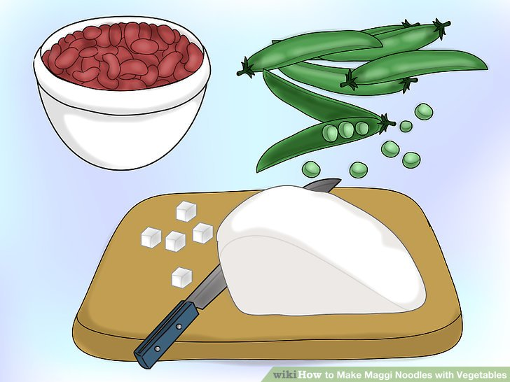
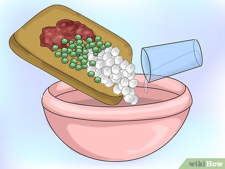
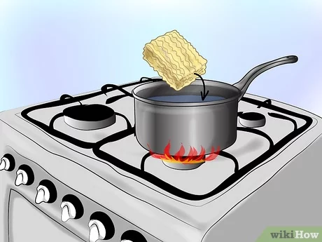
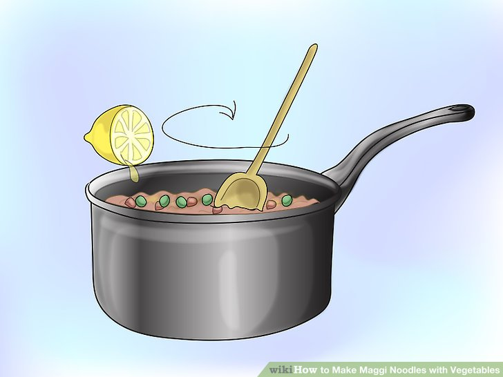

HOW TO MAKE MAGGI
Welcome to maggi life!!
Many Maggie products contain MSG,which naturally occurs in hydrolyzed vegetable protein. And though MSG has been falsely maligned, there is no doubt that it adds a deep umami flavor to anything it touches.
Shopping list
- Milk
- Peanut butter
- Coffee
- Jam
- Maggie
- Rorn flakes
- Rusk (toast)
- Brown bread
Maggi recipe
- Boil 1 and half cups of water
- Break the noddle cke in half
- Add the maggie masals
- Add some veggies :-
- Peas
- Carrot
- Potatoes
- Onions
- Cook for 2 minutes
- Aur hamri tasy maggie ab tyaar hai!!
- Aur hamri tasy maggie ab tyaar hai!!
Google
Page 2
Notes
Step 1

Stap 2

Stap 3

Stap 4

Ready maggi!